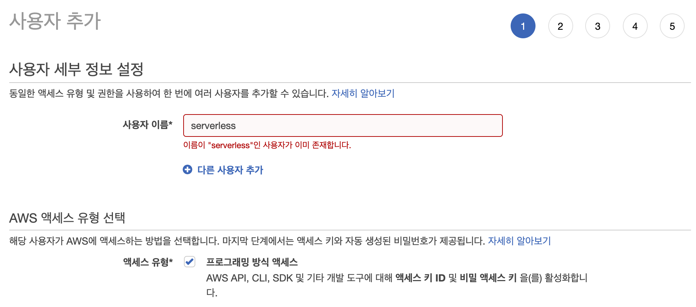
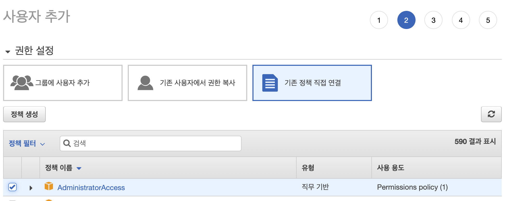
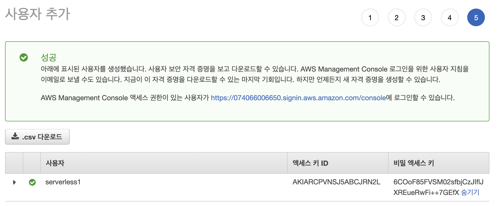

목차
배경
회사의 서비스를 제공하기 위한 기능들을 개발하고 서버에 직접 배포하는 방식을 사용해왔습니다. 그러다보니 특정 기능이 한번에 많은 요청이 들어올 경우, 서버 부하가 발생하여 다운되는 일이 발생할 가능성이 높았습니다. 그렇다고 특정 기능 때문에 서버 자원을 업그레이드 하거나 서버 수를 늘리는 것 또한 유지비용을 감당하기에는 무리였습니다. (AWS 요금제가 꽤 비싼편입니다.)
그래서 이러한 고민을 해결하기 위해 Serverless 어플리케이션 개발의 대표적인 AWS Lambda를 사용해보기로 했습니다.
그러나 어떻게하면 Lambda 로 개발과 테스트 및 배포를 할 수 있을까? 라는 문제에 부딪혔습니다. 매번 AWS Lambda 브라우저 콘솔에 접속하여 개발하는 것은 너무 불편하여 비효율적입니다.
그래서 저처럼 고민하는 분들을 위해 Serverless 프레임워크 를 사용하는 방법을 정리 해봤습니다.
Serverless 프레임워크
아래 설명은 Serverless 깃허브 그대로 번역하였습니다.
이벤트에 응답하여 실행되고 자동 확장되며 실행시 요금이 청구되는 마이크로 서비스로 구성된 애플리케이션을 빌드하십시오. 이를 통해 앱 유지 관리에 드는 총 비용을 낮추고 더 많은 로직을 더 빠르게 구축 할 수 있습니다.
프레임 워크는 AWS Lambda, Google Cloud Functions 등과 같은 새로운 이벤트 중심 컴퓨팅 서비스를 사용합니다. 서버리스 아키텍처를 개발 및 배포하기위한 스캐 폴딩, 워크 플로 자동화 및 모범 사례를 제공하는 명령 줄 도구입니다. 또한 플러그인을 통해 완전히 확장 가능합니다.
서버리스는 MIT 오픈 소스 프로젝트이며, 벤처 지원 전임 팀이 적극적으로 관리합니다.
간단히 정리하면 AWS, 구글, 마이크로소프트 같은 클라우드 서비스에 마이크로 서비스 방식으로 원활한 개발을 할 수 있도록 지원하는 도구입니다. 현재 서비스 개발 추세는 오랫동안 모놀리식(monolithic) 방식에서 마이크로 서비스(micro services) 방식으로 점점 변화중입니다. 마이크로 서비스 방식으로 추세가 형성된 것은 클라우드 산업이 많이 발전했기 때문에 자체 서버를 구축하지 않아도 클라우드 컴퓨팅 자원을 빌려서 서비스를 구축 할 수 있게 된 것이죠.
Serverless 개발환경 구축
개발환경 구축은 굉장히 간단합니다. 설치 명령어를 입력하고 AWS IAM(Identity and Access Management)를 통해 key를 발급 받습니다. 그리고 발급 받은 key를 이용하여 AWS lambda 에 함수를 배포하면 끝입니다.
패키지 전역 설치하기
1
$ npm install -g serverless
프로젝트 생성
1
2$ serverless create --template aws-nodejs --path serverless-sample
$ cd serverless-sample- 생성된
serverless-sample디렉토리를 살펴봅시다.- serverless.yml
- Lambda 함수 및 APi Gateway 등 설정을 위한 파일
- handler.js
- Lambda 실행 함수 파일
- 기본 함수
hello정의됨
- .gitignore
- git 이 파일을 추적하지 않기 위한 설정 파일
- serverless.yml
- 생성된
Lambda 함수 로컬 테스트
1
2
3
4
5
6
7
8
9
10
11
12
13
14
15
16// handler.js
;
module.exports.hello = async event => {
return {
statusCode: 200,
body: JSON.stringify(
{
message: 'Go Serverless v1.0! Your function executed successfully!',
input: event,
},
null,
2
),
};
};아래는 handler.js 파일에 정의된
hello함수를 실행한 결과입니다.-d옵션은 데이터를 전달 할 때 사용합니다. 예시로 함수 실행시 문자열 데이터인 ‘test’ 를 전달하였습니다.-d옵션으로 전달한 데이터는 hello 함수의event인자로 접근 가능합니다.- 출력의
body.input에 전달한 ‘test’ 값이 출력된 것을 확인 할 수 있습니다.
1
2
3
4
5
6
7
8$ serverless invoke local -f hello -d 'test'
// Object 데이터를 전달하려면 'test' 대신 '{key: "value"}' 로 전달
// ExperimentalWarning 실험적인 경고라니깐 무시하자.
(node:10704) ExperimentalWarning: The fs.promises API is experimental
{
"statusCode": 200,
"body": "{\n \"message\": \"Go Serverless v1.0! Your function executed successfully!\",\n \"input\": \"test\"\n}"
}AWS IAM(Identity and Access Management)로 부터 Key 발급 받기
AWS Lambda 함수를 배포하기 전에 Key를 발급받아야 합니다. 왜냐하면 개발자가 수동으로 Lambda 함수를 배포해야하는 것을 Serverless 프레임워크가 대신 배포하기 위한 권한이 필요하기 때문입니다.
1) IAM 페이지 접속하기
- AWS 콘솔 접속 -> 우측 상단 계정 이름 클릭 -> 내 보안 자격 증명 클릭
2) IAM 계정 추가하기
좌측 메뉴에서
사용자클릭 -> 우측 영영 상단사용자 추가클릭계정 생성 step1- 계정 이름을 설정하세요. 저는
serverless로 미리 생성 했습니다. - 프로그래밍 방식 엑세스를 체크하세요.
계정 생성 step2- 빠른 진행을 위해 모든 접근 권한을 가진 정책을 선택하세요.
- 실제 서비스에는 모든 권한을 가진 정책 사용은 권장하지 않습니다.
계정 생성 step5- 3,4 단계는 패스합니다.
- 5단계에서 사용자의
엑세스 키 ID,비밀 엑세스 키를 복사하거나 .csv 다운로드 합니다.
- 계정 이름을 설정하세요. 저는
3) serverless config 에 aws credentials 설정하기
발급 받은
엑세스 키 ID와비밀 엑세스 키를 아래 커맨드에서 변경할 부분을 찾아서 바꿔줍니다.1
2
3
4
5$ serverless config credentials --provider aws --key xxxx --secret yyyy
$ cat ~/.aws/credentials
[default]
aws_access_key_id=xxxx
aws_secret_access_key=yyyy
serverless.yml 파일 수정
설정 파일에 몇가지 사항을 추가합니다. memorySize, timeout 등의 설정 맨 아래 참고를 확인하세요.
- provider.region - 배포할 리전
- provider.memorySize - 배포할 리전
- provider.timeout - Lambda 함수 최대 동작 시간(초 단위), 이 시간이 초과하면 에러 발생
1
2
3
4
5
6provider:
name: aws
runtime: nodejs12.x
region: ap-northeast-2
memorySize: 128
timeout: 10AWS Lambda 함수 배포하기
배포에 소요되는 시간은 함수에 사용된 패키지 용량에 따라 다릅니다.
배포가 끝나면 AWS Lambda 콘솔에 접근하면 함수가 생성된 것을 확인 할수 있습니다. 또한 Lambda 함수 배포를 위한 전용 S3 버킷이 생성된 것도 확인할 수 있습니다.1
2
3
4
5
6
7
8
9
10
11
12
13
14
15
16
17
18
19
20
21
22
23
24
25
26$ serverless deploy -v
(node:22161) ExperimentalWarning: The fs.promises API is experimental
Serverless: Packaging service...
...
...
Serverless: Stack update finished...
Service Information
service: serverless-sample
stage: dev
region: ap-northeast-2
stack: serverless-sample-dev
resources: 6
api keys:
None
endpoints:
None
functions:
hello: serverless-sample-dev-hello
layers:
None
...
...
Serverless: Run the "serverless" command to setup monitoring, troubleshooting and testing.Nodejs 에서 Lambda 함수 호출하기
먼저 aws-sdk 패키지를 다운로드 받습니다.
1
$ npm i aws-sdk
Lambda 함수를 호출하기 위한 코드 입니다.
- FunctionName: AWS Lambda 콘솔에 생성된 함수 이름 기준입니다.
- Payload: 전달한 데이터입니다. 항상 문자열이어야 합니다.
1
2
3
4
5
6
7
8
9
10
11
12
13
14
15
16
17
18const AWS = require('aws-sdk');
AWS.config.update({
accessKeyId: 'xxxx',
secretAccessKey: 'yyyy',
region: 'ap-northeast-2',
});
const result = await new AWS.Lambda()
.invoke({
FunctionName: 'serverless-sample-dev-hello' /* required */,
Payload: JSON.stringify({
key: 'Lambda Test value'
})
})
.promise();
console.log(result);
마무리
여기까지 Serverless 프레임워크를 이용한 Lambda 개발 환경을 구축 해봤습니다.
다음에는 실제 서비스에 배포하기 전에 테스트를 진행하기 위해 Dev, Prod 환경을 구분하는 포스팅을 작성할 예정입니다.

{kind=link}
{kind=link}
{kind=link}